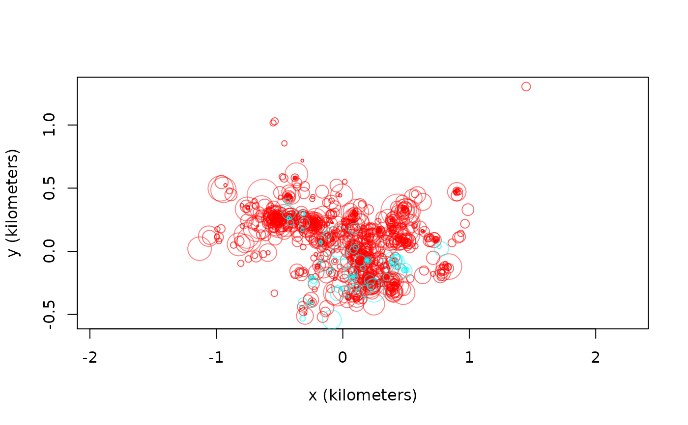

coati.RdGPS data on 2 coati. When using this dataset, please cite the original article by Powell et al (in preparation) and the Movebank data package (Kays and Hirsch, 2015).
data("coati")
A list of 2 telemetry objects.
R. A. Powell, S. Ellwood, R. Kays. Stink or swim: techniques to meet the challenges for the study and conservation of small critters that hide, swim or climb and may otherwise make themselves unpleasant. In L. Harrington and D. W. Macdonald; Biology and Conservation of Mustelids and Procyonids (in preparation).
R. Kays, B. T. Hirsch Data from: Stink or swim: techniques to meet the challenges for the study and conservation of small critters that hide, swim or climb and may otherwise make themselves unpleasant. Movebank Data Repository. DOI:10.5441/001/1.41076dq1 (2015).
# Load package and data library(ctmm) data("coati") # Plot all sampled locations plot(coati,col=rainbow(2))